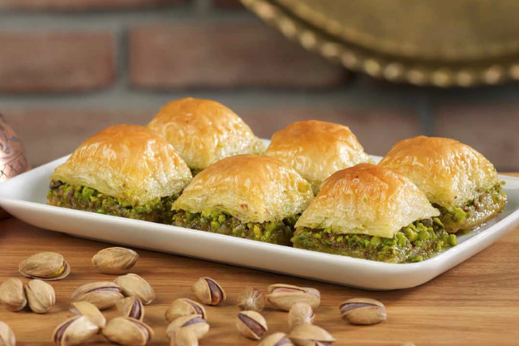

The remarkable baklava is a luscious dessert created with layers of thin phyllo dough intertwined with chopped nuts, all doused in a sweet, viscous syrup. The popularity of baklava has long surpassed borders, regions, and ethnic groups to become a dessert whose origin and invention is claimed by numerous countries.
Meal prep time : 1 hour 20 minutes
Servings : 18